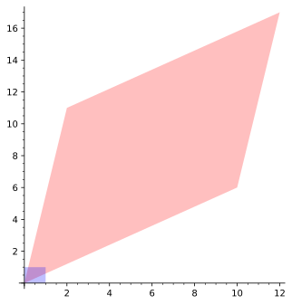
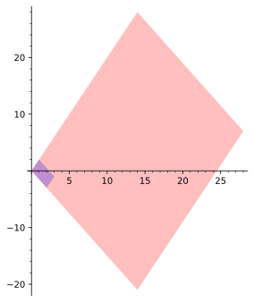

On peut observer l’effet géométrique de cette transformation sur le carré unité à la figure 6.1.1. À priori, il n’est pas évident de voir comment décrire la transformation dans des termes géométriques. Est-ce une rotation, une réflexion, un étirement, un cisaillement ou même une combinaison de tout cela? Par contre, si l’on regarde son effet sur le parallélogramme engendré par les vecteurs \(\vec{u}=(1,2),\vec{v}=(2,-3)\text{,}\) son effet devient clair. La figure 6.1.2 permet de voir cet effet.
Figure6.1.1.Une transformation difficile à cerner
Figure6.1.2.La même transformation sous un autre angle
Il semble que la matrice \(A\) représente un étirement d’un certain facteur dans la direction \((1,2)\) et un étirement d’un autre facteur dans la direction \((2,-3)\text{.}\) En principe, on dévie légèrement de la définition donnée à l’exercice 2.3.6.13, mais cela ne cause pas de problème en pratique.
Dans cette section, on verra comment trouver les bonnes directions pour comprendre la géométrie d’une transformation linéaire. Ces directions sont appelées les vecteurs propres et possèdent des nombres associés appelés valeurs propres. On définit la notion de multiplicité algébrique et multiplicité géométrique.
Sous-section6.1.1Vecteurs et valeurs propres
On considère les matrices carrées de format \(2\times 2\text{.}\) Inspiré par la matrice de l’introduction, on se demande s’il existe des vecteurs dont l’image est un multiple du vecteur initial. Mathématiquement, on cherche des vecteurs \(\vec{v}_1,\vec{v}_2\) et des nombres réels \(\lambda_1,\lambda_2\) tels que
où \(A\) est une matrice \(2\times 2\) quelconque. On regarde l’exemple d’introduction afin de déterminer les nombres \(\lambda_1,\lambda_2\) à partir des directions invariantes. La prochaine sous-section expliquera comment obtenir à la fois les \(\lambda\) et les directions invariantes.
Exemple6.1.3.Un premier calcul avec les directions invariantes.
On cherche les deux nombres \(\lambda_1,\lambda_2\) associés aux directions invariantes de la matrice
Parce que les directions sont données, il suffit de calculer l’image de chacune de ces directions et de déduire le facteur associé. Pour la direction \((1,2)\text{,}\) on a
La matrice \(A\) représente alors un étirement de facteur \(14\) dans la direction du vecteur \((1,2)\) et un étirement de facteur \(7\) dans la direction \((2,-3)\text{.}\)
Parce que les matrices peuvent aussi représenter des transformations linéaires d’espaces vectoriels quelconques, on définit les directions invariantes (et leur facteur associé) par un terme qui s’éloigne un peu de la géométrie.
Définition6.1.4.Vecteurs et valeurs propres.
Soit \(A\text{,}\) une matrice carrée représentant une transformation linéaire d’un espace \(V\) vers ce même espace. On dit que \(\vec{v}\in V\) est un vecteur propre si \(\vec{v}\neq \vec{0}\) et s’il existe un scalaire \(\lambda\) pour lequel
Le scalaire \(\lambda\) est alors appelé la valeur propre associée à \(\vec{v}\text{.}\)
Si l’on regarde l’équation (6.1.2) du point de vue d’un système d’équations, on se retrouve avec \(n\) inconnues pour le vecteur \(\vec{v}\) et une supplémentaire provenant de la valeur propre \(\lambda\text{.}\) Le fait que cette valeur propre multiplie les composantes du vecteur fait en sorte que ce système d’équations n’est même pas linéaire. Heureusement, les notions du Chapitre 4 et du Chapitre 5 fournissent une méthode efficace pour trouver les vecteurs et les valeurs propres. Dans un premier temps par contre, on considère certaines questions et l’on tente d’y répondre en s’appuyant sur des arguments géométriques.
Une première remarque est qu’un vecteur propre ne peut pas être nul, par définition. Puisque le vecteur nul n’a pas de direction et que les vecteurs propres correspondent géométriquement aux directions invariantes de la transformation linéaire, ce choix prend son sens. D’un autre point de vue, puisque n’importe quelle valeur de \(\lambda\) rendrait l’équation (6.1.2) si \(\vec{v}=\vec{0}\text{,}\) on n’aurait plus l’unicité de la valeur propre. Par contre, rien n’empêche \(\lambda\) d’être nul. Géométriquement, cela signifie qu’une direction est envoyée sur le vecteur nul. Si l’on pense à une projection orthogonale dans \(\mathbb{R}^2\) sur un vecteur \(\vec{v}\text{,}\) on sait que \(P(\vec{v})=\vec{v}\) et \(P(\vec{v}_{\perp})=\vec{0}\text{.}\) Cela donne donc directement deux vecteurs propres, \(\vec{v},\vec{v}_{\perp}\) et leur valeur propre associée, \(1,0\text{.}\)
Est-ce qu’une transformation linéaire a toujours des directions invariantes? En regardant l’effet d’une rotation et le fait que le vecteur nul ne peut pas être un vecteur propre, on comprend qu’il est possible qu’il n’y ait pas de vecteurs propres pour une transformation donnée. (Si l’on se permet de sortir du cadre des nombres réels, cela sera alors possible. On explore cette particularité dans l’annexe [provisional cross-reference: nombrescomplexes].) Y a-t-il un nombre maximum de directions invariantes? Si l’on pense à la matrice identité, toutes les directions sont invariantes. Dans le cas des vecteurs propres, dès qu’il y en a un, il y a une infinité de vecteurs propres.
Proposition6.1.5.Vecteurs propres et direction invariante.
Soit \(\vec{v}\text{,}\) un vecteur propre d’une matrice \(A\text{.}\) Alors pour tout \(k\neq 0\) réel, le vecteur \(k\vec{v}\) est aussi un vecteur propre.
Pour une direction invariante, il y a donc une infinité de vecteurs propres.
La figure interactive suivante permet d’explorer différentes transformations géométriques et demande de déterminer les vecteurs et valeurs propres associés.
Cliquer sur l’une des quatre transformations à étudier. Déterminer ensuite les valeurs et vecteurs propres en bougeant le vecteur \(\vec{u}\) et en observant sa transformation. Écrire les réponses dans les cases appropriées, en prenant soin de mettre la plus petite des valeurs propres et un vecteur propre associé dans la ligne du haut. Cliquer ensuite sur valider les réponses afin de vérifier. Un clic sur un autre type de transformation va générer un nouveau problème.
Figure6.1.6.Vecteurs et valeurs propres géométriques
On termine avec des commandes Sage en lien avec la sous-section.
Calcul6.1.7.Vecteurs et valeurs propres sur Sage.
En anglais, les mots pour vecteur propre et valeur propre sont respectivement “eigenvector” et “eigenvalue”, qui sont eux-mêmes dérivés du mot allemand “eigen”, qui signifie propre, caractéristique ou encore particulier. Sans surprise donc, la commande sur Sage pour trouver les valeurs propres est A.eigenvalues(). Pour les vecteurs propres, Sage doit aussi savoir si l’on veut un vecteur propre à droite (ce que l’on veut) ou à gauche (car il pourrait aussi exister un vecteur \(\vec{v}\) et un scalaire \(\lambda\) tels que \(\vec{v}A=\lambda\vec{v}\)). La commande est donc A.eigenvectors_right(). Sage retourne alors un triplet composé, dans l’ordre, de la valeur propre, d’un vecteur propre associé à celle-ci et d’un troisième nombre, appelé la multiplicité, qui sera considéré dans la sous-section suivante. Voici les valeurs et vecteurs propres de la matrice \(A\) de l’introduction.
On vérifie que, pour une matrice de réflexion quelconque, on a toujours \(1\) et \(-1\) comme valeurs propres et que les vecteurs propres associés sont la direction de l’axe de réflexion et son perpendiculaire.
En multipliant le second vecteur par \(\cos(\theta)\) et le premier par \(-\sin(\theta)\text{,}\) on retrouve les directions voulues.
Une particularité que l’on peut remarquer tient au fait que, dans la commande du vecteur propre, celui-ci est donné dans une liste qui ne contient que ce vecteur. En fait, pour une valeur explicite de \(\lambda\text{,}\) il est possible d’avoir plus d’une direction invariante associée à cette valeur. Il s’avère que l’espace engendré par les vecteurs propres associés à un scalaire \(\lambda\) est un sous-espace vectoriel. On peut donc parler d’espace invariant ou espace propre. Ce concept sera exploré dans la sous-section suivante. En attendant, voici les vecteurs et valeurs propres d’une réflexion dans \(\mathbb{R}^3\text{.}\)
On remarque que la valeur propre \(1\) apparait deux fois dans l’exécution de la commande eigenvalues et que le vecteur propre qui lui est associé est en fait deux vecteurs. On remarque aussi que le troisième élément de la liste est \(2\text{,}\) qu’il y a deux vecteurs et que la valeur propre apparaissait deux fois. Coïncidence?
Sous-section6.1.2Polynôme caractéristique et espace propre
L’objectif principal de cette sous-section est de déterminer une manière d’obtenir les valeurs et les vecteurs propres. On a expliqué plus haut que le système d’équations découlant de l’équation matricielle (6.1.2) n’est pas linéaire par rapport à la variable \(\lambda\text{,}\) ce qui peut poser problème, spécifiquement en pensant aux méthodes du Chapitre 3. On regarde donc à nouveau cette équation. On peut réécrire
De cette nouvelle équation, on peut conclure qu’un vecteur propre doit être dans l’espace nul de la matrice \(A-\lambda I\text{.}\) De plus, puisque la définition d’un vecteur propre exige que le vecteur soit non nul, il faut que l’espace nul de cette matrice soit de dimension plus grande ou égale à \(1\text{.}\) Les valeurs propres possibles pour une matrice \(A\) sont donc les valeurs de \(\lambda\) qui font en sorte que l’espace nul de la matrice \(A-\lambda I\) n’est pas réduit à \(\{\vec{0}\}\text{.}\) Selon le Théorème de la matrice inverse, cinquième version, ceci se produit lorsque la matrice \(A-\lambda I\) n’est pas inversible.
La manière classique de déterminer les valeurs propres d’une matrice \(A\) est de considérer les valeurs de \(\lambda\) qui font que le déterminant de la matrice \(A-\lambda I\) est nul. Le déterminant de cette matrice est un polynôme en \(\lambda\text{,}\) dont les zéros sont précisément les valeurs propres.
Définition6.1.8.Polynôme caractéristique d’une matrice.
Soit \(A\text{,}\) une matrice carrée. On appelle le polynôme caractéristique de la matrice \(A\) le polynôme résultant du calcul de \(\text{det}(A-\lambda I)\text{.}\)
En réunissant les informations ci-dessus, on obtient la proposition suivante.
Proposition6.1.9.Polynôme caractéristique et valeurs propres.
Soit \(A\text{,}\) une matrice carrée. Les valeurs propres de \(A\) correspondent aux zéros de son polynôme caractéristique.
Pour que \(\lambda\) soit une valeur propre de la matrice \(A\text{,}\) il faut qu’il existe un vecteur non nul \(\vec{v}\) tel que \(A\vec{v}=\lambda \vec{v}\text{.}\) Soit \(\lambda\text{,}\) un zéro du polynôme caractéristique. Puisque \(\text{det}(A-\lambda I)=0\text{,}\) l’espace nul de cette matrice est de dimension supérieure ou égale à \(1\text{.}\) Soit \(\vec{v}\in \mathcal{N}(A-\lambda I)\text{,}\) un vecteur non nul de cet espace nul. On a alors
Ce polynôme se factorise en \((\lambda-7)(\lambda-14)\text{,}\) ce qui donne les valeurs propres connues \(\lambda_1=7\) et \(\lambda_2=14\text{.}\)
On se tourne vers les transformations linéaires géométriques de l’exemple 2.1.13. On peut déduire les valeurs propres de plusieurs de ces transformations en s’appuyant seulement sur le contexte géométrique, mais le calcul du polynôme caractéristique permettra de voir si l’on en oublie.
Exemple6.1.11.Valeurs propres des transformations géométriques de \(\mathbb{R}^2\text{.}\).
Pour chacune des transformations de la liste 2.1.14, déterminer les valeurs propres réelles. (Rappel: les matrices de ces transformations linéaires ont été trouvées à l’exemple 2.1.23.)
La transformation identité garde tous les vecteurs en place. On a donc \(I\vec{v}=\vec{v}\) pour tous vecteurs de \(\mathbb{R}^2\text{.}\) Il s’ensuit que \(\lambda=1\) est une valeur propre. Le polynôme caractéristique de la matrice est
La réflexion par rapport à l’axe des \(x\) laisse tout vecteur parallèle à \((1,0)\) inchangé et tout vecteur perpendiculaire à \((1,0)\) est envoyé sur son opposé. Les valeurs propres devraient donc être \(\lambda_1=1\) et \(\lambda_2=-1\text{.}\) En effet, le polynôme caractéristique donne
Une rotation ne laisse aucun vecteur en place, sauf le vecteur nul qui ne peut pas être un vecteur propre. Il ne devrait donc pas y avoir de valeurs propres. Le polynôme caractéristique est
Les étirements ont dans leur définition une direction qui est inchangée. Une valeur propre est très certainement le facteur d’étirement \(r\text{.}\) Dans l’exercice 2.2.3.8, on a toutefois mentionné qu’un vecteur dont la direction est perpendiculaire à la direction étirée ne changeait pas. La valeur \(\lambda=1\) semble donc aussi être une valeur propre. Dans le cas de l’étirement horizontal, on a
Une homothétie étant un étirement dans les deux directions, il semble plausible de considérer que le facteur \(r\) sera la seule valeur propre. En effet, on a
Il est peut-être difficile de voir quelles seront les valeurs propres en pensant seulement à la permutation des composantes. On peut toutefois remarquer que la permutation dans \(\mathbb{R}^2\) est aussi une réflexion de direction \(\pi/4\text{.}\) On peut probablement conclure que les valeurs propres seront \(1\) et \(-1\text{,}\) comme pour les valeurs propres d’une réflexion selon l’axe des abscisses. En effet,
Pour une projection orthogonale, le vecteur sur lequel on projette demeure inchangé et le vecteur perpendiculaire s’écrase à \(\vec{0}\text{.}\) On peut donc penser que les valeurs propres seront \(\lambda_1=1\) et \(\lambda_2=0\text{.}\) On a,
On voit que peu importe les composantes du vecteur \((w_1,w_2)\text{,}\) les valeurs propres seront toujours \(\lambda_1=0\) et \(\lambda_2=1\text{.}\)
Pour ensuite trouver les vecteurs propres d’une matrice \(A\text{,}\) on peut regarder l’espace nul de \(A-\lambda I\) pour chaque valeur de \(\lambda\) faisant en sorte que le polynôme caractéristique s’annule. Bien qu’ils soient relativement facile de les déterminer géométriquement, on l’a, en quelque sorte, fait à l’exemple 6.1.11, l’exercice 6.1.4.1 déterminera les vecteurs propres des transformations linéaires de la liste 2.1.14, en regardant l’espace propre approprié. Pour le moment, on va regarder les vecteurs propres de la matrice d’introduction.
Exemple6.1.12.Calcul des vecteurs propres de la matrice d’introduction.
À l’exemple 6.1.10, on a réussi à trouver que les valeurs propres de la matrice sont \(\lambda_1=7\) et \(\lambda_2=14\text{.}\) En caractérisant l’espace propre des matrices \(A-7I\) et \(A-14I\text{,}\) on pourra trouver des vecteurs propres associés à chacune des valeurs propres.
On peut lire une base de l’espace nul de cette matrice de sa forme échelonnée réduite qui est \(\vec{u}_1=\left(-\frac{2}{3},1\right)\text{.}\) En multipliant par \(-3\) ce vecteur, on retrouve le vecteur \(\vec{v}=(2,-3)\) de l’énoncé.
On peut lire une base de l’espace nul de cette matrice de sa forme échelonnée réduite qui est \(\vec{v}_1=\left(\frac{1}{2},1\right)\text{.}\) En multipliant par \(2\) ce vecteur, on retrouve le vecteur \(\vec{v}=(1,2)\) de l’énoncé.
On constate que, pour trouver un vecteur propre, il faut regarder l’espace nul de la matrice \(A-\lambda I\) et que n’importe quel vecteur de ce sous-espace pourra jouer le rôle de vecteur propre. En particulier, une base de cet espace peut entièrement décrire l’espace des vecteurs propres associés à une valeur propre spécifique d’une matrice \(A\text{.}\) On appelle \(\mathcal{N}(A-\lambda I)\)l’espace propre de la matrice \(A\) associé à \(\lambda\text{.}\)
On regarde d’autres exemples de calculs de valeurs et vecteurs propres. À partir de ceux-ci, on fera quelques observations qui guideront la suite.
Exemple6.1.13.Des calculs de vecteurs et valeurs propres.
On cherche les valeurs et vecteurs propres des matrices suivantes:
Les valeurs propres sont les valeurs de \(\lambda\) qui annulent ce déterminant, soit \(\lambda_1=1\) et \(\lambda_2=2\text{.}\)
On trouve le premier vecteur propre en regardant l’espace nul de \(A-I=\begin{pmatrix} 2&1\\ -2&-1 \end{pmatrix}\text{.}\) En effectuant l’opération élémentaire \(L_2+L_1\to L_2\) et ensuite l’opération élémentaire \(L_1/2\to L_1\text{,}\) on obtient la matrice échelonnée réduite
Celle-ci donne le vecteur propre \(\vec{u}_1=(-1/2,1)\text{,}\) ou son multiple \(\vec{v}_1=(-1,2)\text{.}\) Un calcul rapide montre qu’on a bel et bien \(A\vec{v}_1=\vec{v}_1\text{.}\)
Pour le second vecteur propre, on procède de manière similaire. On regarde l’espace propre associé à \(\lambda_2=2\text{.}\) On a alors
On ne trouve ici qu’une seule valeur propre égale à \(\lambda=-2\text{.}\) Pour l’espace propre, on regarde l’espace nul de la matrice \(B+2I=\begin{pmatrix} 3&-3\\ 3&-3 \end{pmatrix}\text{,}\) dont la forme échelonnée réduite est \(rref(B+2I)=\begin{pmatrix} 1&-1\\ 0&0 \end{pmatrix}\text{.}\) Un vecteur propre est donc \(\vec{v}=(1,1)\text{.}\) Encore une fois, un calcul permet de vérifier que
Les valeurs propres sont donc \(\lambda_1=2,\lambda_2=-2\) et \(\lambda_3=0\text{.}\)
Pour la recherche des vecteurs propres associés, il faut regarder les espaces nuls des matrices \(C-\lambda I\) pour chaque valeur \(\lambda\) trouvée. Pour \(\lambda=2\text{,}\) on trouve
Il n’y a qu’une seule variable libre, la deuxième. Une base de l’espace nul est donc \(\vec{u}_1=(1/2,1,0)\text{,}\) qui constitue un vecteur propre. Plus simplement, on peut le multiplier par \(2\) pour avoir \(\vec{v}_1=(1,2,0)\text{.}\) Un calcul simple montre que l’on a bel et bien \(C\vec{v}_1=2\vec{v}_1\text{.}\)
Pour le deuxième vecteur propre associé à la valeur propre \(\lambda_2=-2\text{,}\) on procède de la même manière. On a
Encore une fois, on ne retrouve qu’une variable libre, cette fois en \(z\text{,}\) qui amène comme vecteur propre le vecteur \(\vec{v}_2=(-1,0,1)\text{.}\) On vérifie à nouveau que l’on a bien \(C\vec{v}_2=-2\vec{v}_2\) par un calcul de produit matrice vecteur.
Finalement, avec la dernière valeur propre \(\lambda_3=0\text{,}\) on a
On se permet de faire les calculs sur Sage pour les deux prochaines matrices. On n’utilisera pas les fonctions eigenvalues et eigenvectors_right, car on veut pour l’instant être en mesure de comprendre comment obtenir les valeurs et vecteurs propres à partir des définitions et résultats, mais on laisse Sage faire les calculs de ces déterminants et l’échelonnage des matrices. Pour les valeurs propres:
Cette fois, les valeurs propres sont \(\lambda_1=1\) et \(\lambda_2=2\text{.}\) On remarque qu’il n’y a encore une fois que deux valeurs propres.
Un premier vecteur propre est obtenu en regardant l’espace propre associé à \(\lambda_1\text{.}\)
Le vecteur propre est \(\vec{v}_1=(1,0,0)\text{.}\) Pour la seconde valeur propre :
Le second vecteur propre est \(\vec{v}_2=(0,0,1)\text{.}\)
On remarque dans ce cas-ci que chaque valeur propre n’a qu’une direction propre associée.
On répète la démarche précédente avec la matrice \(F\) et Sage.
D’abord, pour les valeurs propres, on calcule le déterminant de la matrice \(F-\lambda I\) et l’on demande à Sage de factoriser le tout pour pouvoir y lire facilement les zéros. À noter qu’on utilise \(x\) plutôt que \(\lambda\text{,}\) car le mot lambda est protégé en python.
Il n’y a que deux valeurs propres distinctes, \(\lambda_1=-1\) et \(\lambda_2=1\text{.}\) Pour trouver les vecteurs propres, on trouve une base pour les espaces nuls des deux matrices \(D+I\) et \(D-I\text{.}\)
Un vecteur propre associé à \(\lambda=-1\) est donc \(\vec{v}_1=(1,0,0)\text{.}\) On vérifie facilement que \(F\vec{v}_1=-\vec{v}_1\text{,}\) puisque ce produit donne la première colonne de la matrice \(F\text{.}\) Pour \(\lambda_2=1\text{,}\) on regarde ce que Sage donne comme espace propre.
On constate qu’il y a ici deux vecteurs propres associés à la valeur propre \(\lambda_2=1\text{.}\) Le vecteur \(\vec{v}_2=(1,2,0)\) (après multiplication par \(2\)) et le vecteur \(\vec{v}_3=(0,0,1)\text{,}\) dont on peut dire que
L’exemple précédent montre que plusieurs situations peuvent survenir lors du calcul des valeurs et vecteurs propres. Est-ce que le déterminant d’une matrice \(A-\lambda I\text{,}\) où \(A\) est une matrice \(n\times n\text{,}\) est toujours un polynôme de degré \(n\text{?}\) Cela semble évident, mais il faudrait le démontrer (voir l’exercice [provisional cross-reference: exo-detvalpropredegre]). Parfois, pour une valeur propre, il peut y avoir plus d’une direction invariante et donc, plus d’un vecteur propre indépendant. En fait, la véritable question est de savoir quelle peut être la dimension de l’espace propre associée à une valeur propre? La matrice \(D\) de l’exemple précédent avait deux valeurs propres, l’une dont l’espace propre était de dimension \(1\) et l’autre de dimension \(2\text{.}\) La matrice \(E\text{,}\) quant à elle, avait aussi deux valeurs propres, mais avec chacun leur espace propre respectif de dimension \(1\text{.}\) Ceci conduit à la définition suivante.
Définition6.1.14.Multiplicité algébrique et géométrique.
Soit \(A\text{,}\) une matrice, \(\lambda_0\text{,}\) une valeur propre de cette matrice et \(k\in \mathbb{N}\text{,}\) la plus grande valeur telle que le facteur \((\lambda-\lambda_0)^k\) divise le polynôme caractéristique. On dit que \(k\) est la multiplicité algébrique de la valeur propre.
Soit \(r=\text{dim}(\mathcal{N}(A-\lambda_0 I))\text{,}\) la dimension de l’espace nul de la matrice \(A-\lambda_0 I\text{.}\) On dit que \(r\) est la multiplicité géométrique de la valeur propre.
La valeur propre \(\lambda_2=1\) pour la matrice \(D\) de l’exemple 6.1.13 a une multiplicité algébrique de \(2\) puisque le déterminant de \(D-\lambda I\) est \((\lambda+1)(\lambda-1)^2\text{.}\) Puisque l’espace propre associé à cette valeur propre était donné par \(\vspan((1,2,0),(0,0,1))\text{.}\) Ces vecteurs étant indépendants, la dimension du sous-espace est \(2\text{,}\) qui est donc la dimension géométrique de \(\lambda_2=1\text{.}\) Par contre, avec la matrice \(E\text{,}\) toujours avec la valeur propre valant \(1\text{,}\) on avait encore une dimension algébrique égale à \(2\text{,}\) mais comme l’espace nul de \(E-\lambda I\) est engendré par \((1,0,0)\text{,}\) la dimension géométrique est de \(1\text{.}\) Sur Sage, lorsqu’on utilise la commande eigenvectors_right, le troisième argument d’un triplet de réponse représente la multiplicité algébrique de la valeur propre. La multiplicité géométrique doit être déduite du nombre de vecteurs propres retournés.
On termine avec des commandes Sage en lien avec la sous-section.
Calcul6.1.15.Polynôme caractéristique et Sage.
Bien que Sage soit capable de calculer directement les vecteurs et les valeurs propres, il peut aussi simplement donner le polynôme caractéristique d’une matrice \(A\text{.}\) Il suffit d’utiliser la commande characteristic_polynomial() ou son équivalent plus court charpoly(). À noter que Sage utilise une version légèrement différente du polynôme caractéristique. Il considère plutôt le déterminant de \(\lambda I-A\text{.}\) Le polynôme retourné par Sage sera le même que celui de la définition 6.1.8 lorsque \(A\) est une matrice de taille \(n\times n\) où \(n\) est pair et diffèrera d’un facteur \(-1\) lorsque \(n\) est impair.
On peut ensuite demander à Sage de factoriser ce polynôme caractéristique, mais pour qu’il puisse accomplir le travail, il faudra peut-être préciser l’espace sous-jacent aux entrées de la matrice. (Par défaut, Sage considère qu’une matrice dont toutes les entrées sont des entiers comme une matrice dans un espace d’entiers, et va factoriser en conséquence.)
En terminant, un retour sur la commande eigenvectors_right en lien avec les multiplicités.
Cette matrice correspond à la matrice \(E\) de l’exemple 6.1.13, où l’on avait trouvé que la valeur propre \(\lambda=1\) n’avait qu’un vecteur propre. Elle apparait toutefois avec une multiplicité algébrique de \(2\text{.}\)
Sous-section6.1.3Quelques résultats
Dans cette section, on obtient quelques résultats théoriques en lien avec les valeurs et vecteurs propres. Plus particulièrement, on obtiendra la sixième version du théorème de la matrice inverse en ajoutant une équivalence sur les valeurs propres. Que peut-on dire d’une matrice inversible et de ses valeurs propres? Puisque les valeurs et vecteurs propres satisfont l’équation \(A\vec{v}=\lambda \vec{v}\) et qu’un vecteur propre ne peut pas être le vecteur nul, quelque chose de particulierse produit si la valeur propre est nulle. Cela entraine qu’il y a des vecteurs non nuls dans l’espace nul de la matrice. Une telle matrice ne peut donc pas être inversible.
Théorème6.1.16.Théorème de la matrice inverse, sixième version.
Soit \(A\text{,}\) une matrice carrée d’ordre \(n\text{.}\) Les énoncés suivants sont équivalents:
La matrice \(A\) est inversible;
Pour chaque vecteur \(\vec{v}\in \R^n\text{,}\) il existe un seul vecteur \(\vec{u}\in \R^n\) tel que \(A\vec{u}=\vec{v}\text{;}\)
Le rang de la matrice est égal à \(n\text{;}\)
La matrice \(A\) possède \(n\) pivots.
La forme échelonnée réduite de \(A\) est la matrice identité;
Aucune ligne n’est une combinaison linéaire des autres lignes;
Aucune colonne n’est une combinaison linéaire des autres colonnes;
Le déterminant de la matrice \(A\) est non nul;
L’espace colonne est de dimension \(n\text{;}\)
L’espace ligne est de dimension \(n\text{;}\)
L’espace nul est de dimension \(0\text{;}\)
L’espace nul gauche est de dimension \(0\text{;}\)
Toutes les valeurs propres de \(A\) sont non nulles.
Il faut seulement démontrer l’équivalence entre le dernier énoncé et l’un des autres. Dans un premier temps, si \(A\) est inversible, alors son espace nul est de dimension \(0\text{.}\) Il n’existe donc pas d’autres vecteurs que \(\vec{0}\) tels que \(A\vec{v}=\vec{0}\text{.}\) Il en découle que \(\lambda=0\) ne peut être une valeur propre.
À l’inverse, si \(A\) est une matrice dont toutes les valeurs propres sont différentes de zéro, cela implique qu’aucun vecteur non nul ne possède la propriété que \(A\vec{v}=0\vec{v}=\vec{0}\text{.}\) Donc, le seul élément dans l’espace nul de \(A\) est le vecteur nul, ce qui signifie que l’espace nul est de dimension \(0\text{.}\) Ainsi, une matrice est inversible si et seulement si aucune de ses valeurs propres n’est nulle.
Le prochain résultat sera utile dans la section suivante. Il porte sur les vecteurs propres et leur indépendance.
Proposition6.1.17.Vecteurs propres et indépendance.
Soit \(\lambda_1,\lambda_2,\ldots ,\lambda_k\text{,}\) des valeurs propres distinctes d’une matrice \(A\) et \(\vec{v}_1,\vec{v}_2,\ldots , \vec{v}_k\text{,}\) des vecteurs propre associés à chacune de ces valeurs propres. Alors, l’ensemble \(\{\vec{v}_1,\vec{v}_2,\ldots , \vec{v}_k\}\) est linéairement indépendant.
Si \(k=1\text{,}\) il n’y a qu’un seul vecteur propre. Celui-ci étant non nul, il est par défaut indépendant. S’il y a plus de deux vecteurs, on procède par contradiction. On suppose que l’ensemble de ces vecteurs propres est dépendant. On peut alors affirmer qu’il existe un entier \(p\) tel que \(\{\vec{v}_1,\vec{v}_2,\ldots , \vec{v}_p\}\) est un ensemble indépendant, mais que \(\{\vec{v}_1,\vec{v}_2,\ldots , \vec{v}_{p+1}\}\) est dépendant. Bien entendu, \(p\neq k\) puisqu’on suppose que l’ensemble de tous ces vecteurs est dépendant. On cherche donc le premier vecteur qui, combiné aux précédents vecteurs indépendants, rend l’ensemble dépendant. Si \(\vec{v}_1,\vec{v}_2,\ldots , \vec{v}_{p+1}\) est dépendant, il existe une combinaison linéaire des \(p\) premiers vecteurs qui donne le vecteur \(\vec{v}_{p+1}\) :
Comme les vecteurs \(\{\vec{v}_1,\vec{v}_2,\ldots , \vec{v}_p\}\) sont linéairement indépendants, il faut que les coefficients de cette combinaison linéaire soient nuls, mais on a également que les valeurs propres sont distinctes. Cela entraine que \(a_1=a_2=\cdots =a_p=0\text{.}\) Par contre, si cela était vrai, l’équation (✶) impliquerait que \(\vec{v}_{p+1}=\vec{0}\text{,}\) ce qui est impossible. On ne peut en conséquence trouver une valeur de \(p\) telle que l’ensemble \(\{\vec{v}_1,\vec{v}_2,\ldots , \vec{v}_p\}\) est indépendant, mais l’ensemble \(\{\vec{v}_1,\vec{v}_2,\ldots , \vec{v}_{p+1}\}\) est dépendant. On conclut que \(\{\vec{v}_1,\vec{v}_2,\ldots , \vec{v}_k\}\) est forcément indépendant, ce qui termine la preuve.
Le prochain résultat est en lien avec les valeurs propres d’une matrice \(A\) et les valeurs propres de matrices obtenues à partir d’opérations algébriques et matricielles comme la multiplication par un scalaire ou l’inverse de \(A\text{.}\)
Proposition6.1.18.L’effet de certaines opérations sur les valeurs propres.
Soit \(A\text{,}\) une matrice carrée et \(\lambda\text{,}\) une valeur propre. Alors
le scalaire \(r\lambda\) est une valeur propre de la matrice \(rA\text{;}\)
le scalaire \(\lambda^k\) est une valeur propre de la matrice \(A^k\text{;}\)
lorsque \(A\) est inversible, \(\frac{1}{\lambda}\) est une valeur propre de la matrice \(A^{-1}\text{;}\)
la valeur propre \(\lambda\) est aussi une valeur propre de transposée \(A^T\text{.}\)
Soit \(\vec{v}\text{,}\) un vecteur propre associé à \(\lambda\) pour la matrice \(A\text{.}\) On a
\begin{align*}
(rA)\vec{v}&=r(A\vec{v}) && \text{associativité du produit scalaire matrice }\\
&=r\lambda \vec{v}\text{.}
\end{align*}
Ainsi, puisque \((rA)\vec{v}=(r\lambda)\vec{v}\text{,}\) une valeur propre de \(rA\) est \(r\lambda\text{.}\) De plus, le vecteur \(\vec{v}\) demeure un vecteur propre.
Si \(A\) est une matrice inversible, alors selon le Théorème de la matrice inverse, sixième version, la valeur propre n’est pas nulle. Soit \(\vec{v}\text{,}\) un vecteur propre associé à \(\lambda\text{.}\) On peut alors écrire
Il n’était pas question du produit de deux matrices dans la proposition précédente. Qu’en est-il des valeurs propres d’une matrice \(AB\text{?}\) À première vue, on pourrait penser que si \(\alpha\) était une valeur propre de \(A\) et \(\beta\) une valeur propre de \(B\text{,}\) alors \(\alpha \beta\) serait une valeur propre du produit puisque
mais il y a un problème avec ce raisonnement. Rien ne garantit que \(A\) et \(B\) ont les mêmes vecteurs propres. Si c’est toutefois le cas, c’est-à-dire si \(\vec{v}\) est un vecteur propre de \(A\) associé à la valeur propre \(\alpha\) et un vecteur propre de \(B\) associé à la valeur propre \(\beta\text{,}\) alors \(\vec{v}\) est un vecteur propre de \(AB\) associé à la valeur propre \(\alpha \beta\text{.}\) En fait, on a même davantage, puisque \(\vec{v}\) est aussi un vecteur propre de la matrice \(BA\text{,}\) aussi associé à la valeur propre \(\alpha \beta\text{.}\) La question du partage des vecteurs propres entre deux matrices sera étudiée plus spécifiquement à la prochaine section.
Un type de matrice pour lequel il est facile de trouver les valeurs propres est lorsque la matrice est triangulaire. Dans ce cas, les valeurs propres se trouvent toujours sur la diagonale.
Proposition6.1.19.Les valeurs propres de matrices triangulaires.
Soit \(L\text{,}\) une matrice triangulaire inférieure et \(U\text{,}\) une matrice triangulaire supérieure. Alors, les valeurs propres de \(L,U\) sont sur leur diagonale respective.
C’est une conséquence directe du fait que les matrices \(L-\lambda I\) et \(U-\lambda I\) sont triangulaires et de la proposition 4.2.20 qui stipule que le déterminant d’une matrice triangulaire est le produit des entrées sur la diagonale principale. On voit que le polynôme caractéristique est déjà factorisé et s’annule précisément aux entrées de la diagonale de \(L\) ou \(U\text{.}\)
Les deux multiplicités associées à une valeur propre;
Le fait qu’une matrice est inversible si et seulement si aucune de ses valeurs propres est zéro, ce qui s’ajoute au théorème de la matrice inverse;
Les propriétés des valeurs propres en lien avec différentes opérations algébriques.
De plus, avec Sage, on a vu les commandes eigenvalues, eigenvectors_right et characteristic_polynomial (ou charpoly) permettant respectivement de déterminer les valeurs propres, vecteurs propres et le polynôme caractéristique d’une matrice.
Exercices6.1.4Exercices
1.
Déterminer les vecteurs propres de chacune des transformations linéaires de la liste 2.1.14 en considérant l’espace propre associé à chaque valeur propre. On rappelle que les valeurs propres ont été trouvées à l’exemple 6.1.11.
Dans la plupart des cas, on donne une base de l’espace propre associé à chaque valeur propre.
Tous les vecteurs de \(\mathbb{R}^2\) sont des vecteurs propres pour la matrice identité.
Le vecteur \((1,0)\) est un vecteur propre pour la valeur propre \(\lambda_1=1\) et le vecteur \((-1,0)\) est un vecteur propre associé à la valeur propre \(\lambda_2=-1\text{.}\)
Aucun vecteur propre réel.
Pour l’étirement horizontal, le vecteur \((1,0)\) est un vecteur propre associé à \(\lambda_1=r\) et le vecteur \((0,1)\) est un vecteur propre associé à \(\lambda_2=1\text{.}\)
Pour un étirement vertical, les rôles sont renversés. Le vecteur \((1,0)\) est un vecteur propre associé à \(\lambda_1=1\) et le vecteur \((0,1)\) un vecteur propre pour \(\lambda_2=r\text{.}\)
Tous les vecteurs de \(\mathbb{R}^2\) sont des vecteurs propres.
Le vecteur \((-1,1)\) est un vecteur propre associé à \(\lambda_1=-1\) et le vecteur \((1,1)\) est un vecteur propre associé à \(\lambda_2=1\text{.}\)
Le vecteur \((-w_2,w_1)\) est un vecteur propre associé à \(\lambda_1=0\) et le vecteur \((w_1,w_2)\) est un vecteur propre associé à \(\lambda_2=1\text{.}\)
Pour chaque transformation, on regarde l’espace propre associé à chacune des valeurs propres trouvées à l’exemple 6.1.11.
Pour la seule valeur propre \(\lambda=1\text{,}\) on a \(I-I=O\text{,}\) la matrice nulle. Tous les vecteurs sont dans l’espace nul de cette matrice. N’importe quel vecteur de \(\mathbb{R}^2\) est donc un vecteur propre.
Pour la valeur propre \(\lambda_1=1\text{,}\) la matrice \(S_x-I\) devient \(\begin{pmatrix}0& -1\\0 & -1 \end{pmatrix}\text{,}\) qui est équivalente à la matrice \(\begin{pmatrix} 0&1\\ 0& 0\end{pmatrix}\) après réduction. L’espace nul de cette matrice est engendré par le vecteur \((1,0)\text{.}\) N’importe quel multiple de ce vecteur est donc un vecteur propre.
Pour la valeur propre \(\lambda_1=-1\text{,}\) la matrice \(S_x+I\) devient \(\begin{pmatrix}2& 0\\0 & 0 \end{pmatrix}\text{,}\) qui est équivalente à la matrice \(\begin{pmatrix} 1&0\\ 0& 0\end{pmatrix}\) après réduction. L’espace nul de cette matrice est engendré par le vecteur \((0,1)\text{.}\) N’importe quel multiple de ce vecteur est donc un vecteur propre.
Comme il n’y avait pas de valeurs propres réelles, il ne peut pas y avoir de vecteurs propres réels non plus.
D’abord, l’étirement horizontal:
Pour la valeur propre \(r\text{,}\) la matrice \(E_{r,h}-rI\) devient \(\begin{pmatrix} 0&0\\ 0 &1-r\end{pmatrix}\text{,}\) qui est équivalente à la matrice \(m>\begin{pmatrix} 0&1\\ 0 &0\end{pmatrix}\) après réduction (si \(r\neq 1)\text{.}\) L’espace nul de cette matrice est engendré par \((1,0)\text{.}\) Toutefois, si l’on avait \(r=1\text{,}\) alors la transformation serait en fait l’identité. On réfère à la partie précédente;
Pour la valeur propre \(1\text{,}\) la matrice \(E_{r,h}-I\) devient \(\begin{pmatrix} r-1&0\\ 0 &0\end{pmatrix}\text{,}\) qui est équivalente à la matrice \(m>\begin{pmatrix} 1&0\\ 0 &0\end{pmatrix}\) après réduction (si \(r\neq 1)\text{.}\) L’espace nul de cette matrice est engendré par \((0,1)\text{.}\) Toutefois, si l’on avait \(r=1\text{,}\) alors la transformation serait en fait l’identité. On réfère à la partie précédente.
Pour ce qui est de l’étirement vertical, la même démarche s’applique, mais les rôles sont inversés.
Pour la valeur propre \(r\text{,}\) la matrice \(E_{r,v}-rI\) devient \(\begin{pmatrix} 1-r&0\\ 0 &0\end{pmatrix}\text{,}\) qui est équivalente à la matrice \(m>\begin{pmatrix} 1&0\\ 0 &0\end{pmatrix}\) après réduction (si \(r\neq 1)\text{.}\) L’espace nul de cette matrice est engendré par \((0,1)\text{.}\) Toutefois, si l’on avait \(r=1\text{,}\) alors la transformation serait en fait l’identité. On réfère à la partie précédente.
Pour la valeur propre \(1\text{,}\) la matrice \(E_{r,v}-I\) devient \(\begin{pmatrix} 0&0\\ 0 &r-1\end{pmatrix}\text{,}\) qui est équivalente à la matrice \(m>\begin{pmatrix} 0&1\\ 0 &0\end{pmatrix}\) après réduction (si \(r\neq 1)\text{.}\) L’espace nul de cette matrice est engendré par \((1,0)\text{.}\) Toutefois, si l’on avait \(r=1\text{,}\) alors la transformation serait en fait l’identité. On réfère à la partie précédente.
De manière semblable à la transformation identité, la matrice \(H_r-I\) donne la matrice nulle. Tous les vecteurs de \(\mathbb{R}^2\) sont des vecteurs propres.
Pour la valeur propre \(\lambda_1=-1\text{,}\) la matrice \(P+I\) devient \(\begin{pmatrix}1& 1\\ 1&1\end{pmatrix}\text{,}\) qui est équivalente à la matrice \(\begin{pmatrix}1& 1\\ 0 & 0\end{pmatrix}\) après réduction. L’espace propre de cette matrice est engendré par \((-1,1)\text{,}\) ce qui fait de tout multiple de ce vecteur un vecteur propre de la matrice \(P\) associé à \(\lambda=-1\text{.}\)
Pour la valeur propre \(\lambda_1=1\text{,}\) la matrice \(P-I\) devient \(\begin{pmatrix}-1& 1\\ 1&-1\end{pmatrix}\text{,}\) qui est équivalente à la matrice \(\begin{pmatrix}1& -1\\ 0 & 0\end{pmatrix}\) après réduction. L’espace propre de cette matrice est engendré par \((1,1)\text{,}\) ce qui fait de tout multiple de ce vecteur un vecteur propre de la matrice \(P\) associé à \(\lambda=1\text{.}\)
Pour la valeur propre \(\lambda_1=0\text{,}\) la matrice à analyser est \(\frac{1}{\norm{\vec{w}}^2}\begin{pmatrix}w_1^2 & w_1w_2 \\ w_1w_2 & w_2^2 \end{pmatrix}\text{.}\) On fait d’abord l’hypothèse que \(w_1\neq 0\text{.}\) Par conséquent, la matrice est équivalente après réduction à \(\frac{1}{\norm{\vec{w}}^2}\begin{pmatrix}1 & \frac{w_2}{w_1} \\ 0 & 0 \end{pmatrix}\text{.}\) Dans ce cas, l’espace nul est engendré par \(\left(-\frac{w_2}{w_1},1\right)\text{,}\) ou encore \((-w_2,w_1)\text{.}\) Toutefois, si \(w_1=0\text{,}\) alors, puisqu’on ne peut projeter sur le vecteur nul, on doit avoir \(w_2\neq 0\text{.}\) La matrice est alors équivalente à \(\frac{1}{\norm{\vec{w}}^2}\begin{pmatrix}0 & 1 \\ 0 & 0 \end{pmatrix}\) après réduction, et a pour générateur de son espace nul le vecteur \((1,0)\text{,}\) ou encore son multiple \((-w_2,0)=(-w_2,w_1)\text{.}\) Dans tous les cas, une base de l’espace propre peut s’écrire comme \((-w_2,w_1)\text{.}\)
Pour la valeur propre \(\lambda_1=0\text{,}\) la matrice à analyser est
Sous l’hypothèse cette fois que \(w_2\neq 0\text{,}\) on peut montrer que cette matrice est équivalente après réduction à la matrice \(\frac{1}{\norm{\vec{w}}^2}\begin{pmatrix}1 & -\frac{w_1}{w_2} \\ 0 & 0 \end{pmatrix}\) Dans ce cas, l’espace nul est engendré par \(\left(\frac{w_1}{w_2},1\right)\) ou son multiple \((w_1,w_2)\text{.}\) Toutefois, si \(w_2=0\text{,}\) alors comme précédemment, on ne peut avoir aussi \(w_1=0\text{,}\) ce qui fait que la matrice après réduction est équivalente à \(\frac{1}{\norm{\vec{w}}^2}\begin{pmatrix}0 & 1 \\ 0 & 0 \end{pmatrix}\text{.}\) L’espace nul est engendré par le vecteur \((1,0)\text{,}\) ou encore son multiple \((w_1,0)=(w_1,w_2)\text{.}\) Dans tous les cas, une base de l’espace propre peut s’écrire comme \((w_1,w_2)\text{.}\)
2.
Pour chacune des matrices suivantes, déterminer les valeurs propres et une base de l’espace propre associé à chaque valeur propre.
qui s’annule lorsque \(\lambda_1=1\) et \(\lambda_2=2\text{.}\)
Pour le premier espace propre, on regarde la matrice \(A-I\) et l’on détermine une base de son espace nul. On utilise Sage pour effectuer la réduction.
On remarque que la troisième variable est libre. Une base de l’espace nul serait le vecteur \((1/3,2/3,1)\text{,}\) parallèle au vecteur \((1,2,3)\text{.}\)
De même, pour le second espace propre, on obtient avec Sage un système ayant lui aussi une seule variable libre, dont une base est donnée par le vecteur
ce qui donne comme valeur propre \(\lambda_1=-2,\lambda_2=1\) et \(\lambda_3=2\text{.}\)
On détermine les espaces propres en échelonnant les matrices appropriées avec Sage.
Pour l’espace propre associé à \(\lambda_1=-2\text{,}\) on voit une variable libre en \(z\text{.}\) Une base de cet espace propre est donnée par \(\vec{v}_1=(0,1,1)\text{.}\) Pour le deuxième espace propre, on a aussi une seule direction invariante donnée par \(\vec{u}_2=(1/3,2/3,1)\text{,}\) parallèle à \(\vec{v}_2=(1,2,3)\text{.}\) Enfin, pour le dernier espace propre, on trouve le vecteur \(\vec{v}_3=(0,1,5)\) après ajustement.
qui offre comme valeurs propres \(\lambda_1=-1\) et \(\lambda_2=3\text{.}\)
Pour les espaces propres, on se tourne une fois de plus vers Sage afin d’échelonner la matrice.
Pour la première valeur propre, on trouve un vecteur propre associé qui est \(\vec{v}_1=(1,0,1)\text{.}\) Pour la seconde valeur propre, il y a deux variables libres et donc, deux directions invariantes associées à cette valeur propre. On trouve \(\vec{u}_1=(1/2,1,0)\text{,}\) parallèle à \(\vec{v}_1=(1,2,0)\) et \(\vec{v}_2=(-1,0,1)\text{.}\)
3.
Soit \(A\text{,}\) une matrice carrée, \(\lambda\text{,}\) une valeur propre et \(\vec{v}\text{,}\) un vecteur propre associé à \(\lambda\text{.}\) Montrer que pour tout \(k\in\mathbb{R}\) non nul, le vecteur \(k\vec{v}\) est aussi un vecteur propre associé à \(\lambda\text{.}\)
Cela découle directement du fait que les vecteurs propres sont des directions invariantes et que \(\vec{v}\) et \(k\vec{v}\) ont la même direction. Un calcul montre que
\begin{align*}
A(k\vec{v})&=k(A\vec{v}) && \text{propriété du produit matrice vecteur et de la multiplication par un scalaire}\\
&=k(\lambda \vec{v}) && \text{car } \vec{v} \text{ est un vecteur propre associé à } \lambda\\
&=\lambda (k\vec{v}) && \text{commutativité de la multiplication}\text{.}
\end{align*}
Le vecteur \(k\vec{v}\) est donc bel et bien un vecteur propre.
4.
Compléter la preuve de la proposition 6.1.18 en démontrant que le scalaire \(r\lambda\) est une valeur propre de la matrice \(rA\) et que la valeur propre \(\lambda\) est aussi une valeur propre de la transposée \(A^T\text{.}\)
On commence par le nombre \(r\lambda\) et l’on montre que c’est une valeur propre de \(rA\text{.}\) Il semble plausible que si \(\vec{v}\) est un vecteur propre de \(A\text{,}\) ce soit aussi un vecteur propre de \(rA\text{.}\) On s’en assure en effectuant le calcul.
\begin{align*}
(rA)\vec{v}&=r(A\vec{v}) && \text{propriété de la multiplication matricielle par un scalaire}\\
&=r(\lambda\vec{v}) && \text{car } \vec{v} \text{ est un vecteur propre associé à } \lambda\\
&= (r\lambda)\vec{v} && \text{ associativité de la multiplication par un scalaire dans un espace vectoriel}\text{.}
\end{align*}
On trouve qu’en effet, \(\vec{v}\) est aussi un vecteur propre de \(rA\) et l’on obtient en même temps la valeur propre \(r\lambda\text{.}\)
Pour le fait que \(\lambda\) est aussi une valeur propre de \(A^T\text{,}\) on ne peut pas procéder de la même manière, car rien ne garantit que le vecteur \(\vec{v}\) sera aussi un vecteur propre de la matrice \(A^T\text{.}\) De toute évidence, on ne connait pas l’effet de \(A^T\) sur \(\vec{v}\text{.}\) On se tourne donc vers la définition.
\begin{align*}
\text{det}(A^T-\lambda I)&=\text{det}((A^T-\lambda I)^T) && \text{selon la propriété des déterminants} \knowl{./knowl/thm-detprop.html}{\text{4.2.16}}\\
&=\text{det}((A^T)^T-(\lambda I)^T) &&\text{selon la propriété de la transposée } \knowl{./knowl/prop-transposeeprop.html}{\text{3.4.3}}\\
&=\text{det}(A-\lambda I) &&\text{selon les propriétés de la transposée } \knowl{./knowl/prop-transposeeprop.html}{\text{3.4.3}} \text{et le fait que } I^T=I\text{.}
\end{align*}
Puisque le déterminant de \(A^T-\lambda I\) est le même que celui de \(A-\lambda I\text{,}\) il s’ensuit que les valeurs propres seront les mêmes.
5.
Déterminer les valeurs propres de la matrice \(A+I\) en fonction de celles de la matrice \(A\text{.}\)
On calcule le déterminant approprié. On utilise \(\mu\) comme variable du polynôme caractéristique, laissant \(\lambda\) pour les valeurs propres de \(A\text{.}\)
On sait que le membre de droite de cette dernière équation a des solutions lorsque \(\mu-1\) correspond aux valeurs propres de \(A\text{.}\) En posant \(\mu-1=\lambda\) et en isolant \(\mu=\lambda+1\text{,}\) on découvre que les valeurs propres de \(A+I\) sont un de plus que les valeurs propres de \(A\text{.}\)
On aurait aussi pu déduire les valeurs propres en essayant de voir si un vecteur propre de \(A\) est aussi un vecteur propre de \(A+I\text{.}\) On aurait alors eu
On ne peut, par contre, pas toujours se fier au fait que les vecteurs propres seront les mêmes après une opération sur la matrice (comme la transposée), c’est pourquoi il est bon de trouver des preuves qui ne les utilisent pas.
6.
Soit \(A,B\text{,}\) des matrices carrées et \(\lambda,\mu\text{,}\) une de leurs valeurs propres respectives. On tente de généraliser l’exercice précédent. Pour chaque énoncé suivant, démontrer s’il est vrai et donner un contrexemple s’il est faux.
(a)
Le scalaire \(\lambda+k\) est une valeur propre de a matrice \(A+kI\text{.}\)
C’est vrai, il suffit de refaire l’une des preuves de l’exercice précédent. Par exemple, en supposant qu’un vecteur propre de \(A\) devrait encore être un vecteur propre de \(A+kI\text{,}\) on trouve
En général, ce sera faux, car on ne sait pas si le même vecteur propre est associé à \(\lambda\) et \(\mu\text{.}\) À titre d’exemple, la matrice \(A=\begin{pmatrix}1&0\\ 0 & -1 \end{pmatrix}\) a pour valeur propre \(\lambda_1=1,\lambda_2=-1\text{,}\) la matrice \(B=\begin{pmatrix}1&1\\ 1 & 1 \end{pmatrix}\) a pour valeur propre \(\mu_1=2,\mu_2=0\text{,}\) mais la matrice \(A+B=\begin{pmatrix}2&1\\ 1 & 0 \end{pmatrix}\) a pour valeurs deux nombres irrationnels. En effet
qui s’annule lorsque \(\delta=\frac{2\pm\sqrt{8}}{2}\text{.}\) Les valeurs propres de la somme ne sont donc pas la somme des valeurs propres.
(c)
Si \(\vec{v}\) est tel que \(A\vec{v}=\lambda \vec{v}\) et \(B\vec{v}=\mu \vec{v}\text{,}\) alors \(\lambda+\mu\) est une valeur propre de \(A+B\text{.}\)
Cette fois, un vecteur propre est partagé. On peut penser que ce vecteur propre sera aussi un vecteur propre de la matrice \(A+B\text{.}\) En effet, on a
On obtient un vecteur propre associé à \(\lambda+\mu\text{.}\)
7.
Montrer que si \(A\) est une matrice carrée telle que \(A\vec{u}=\lambda \vec{u}\) et \(A^T\vec{v}=\mu \vec{v}\) et que \(\lambda\neq \mu\text{,}\) alors \(\vec{u}\cdot \vec{v}=0\text{.}\) En d’autres mots, les vecteurs propres d’une matrice et ceux de sa transposée sont perpendiculaires s’ils ne sont pas associés à la même valeur propre.
Montrer que \((A\vec{u})\cdot \vec{v}=\lambda (\vec{u}\cdot \vec{v})\) et \((A\vec{u})\cdot \vec{v}=\mu (\vec{u}\cdot \vec{v})\text{.}\) Conclure que, puisque \(\lambda\neq \mu\text{,}\) on doit avoir \(\vec{u}\cdot\vec{v}=0\text{.}\)
On pose \(A=\begin{pmatrix} a& c\\ b& d \end{pmatrix}\text{.}\) On calcule le polynôme caractéristique et l’on trouve une correspondance entre les valeurs propres et celui-ci.
En comparant les deux manières d’écrire le polynôme, on trouve que le facteur \(k=1\) et que \(\lambda_1+\lambda_2=a+d=\text{tr}(A)\) et \(\lambda_1\lambda_2=(ad-bc)=\text{det}(A)\text{.}\)
9.
Soit \(M\text{,}\) une matrice carrée dont toutes les entrées sont supérieures ou égales à \(0\) avec la propriété additionnelle que la somme des entrées de chaque ligne donne \(1\text{.}\) Déterminer un vecteur et une valeur propre de \(M\text{.}\)
On cherche une solution à l’équation \(M\vec{v}=\lambda \vec{v}\text{.}\) Le produit \(M\vec{v}\) a, dans chaque entrée, le produit scalaire des lignes de \(M\) avec le vecteur \(\vec{v}\text{.}\) Afin d’utiliser l’information sur la somme des lignes, on pose \(\vec{v}=(1,1,\ldots , 1)\text{.}\) On obtient \(M\vec{v}=\vec{v}\text{,}\) un vecteur propre dont la valeur propre est \(\lambda=1\text{.}\)
10.
Soit \(A,B\text{,}\) des matrices \(n\times n\text{.}\) Dans cet exercice, on s’intéresse aux valeurs propres des produits \(AB\) et \(BA\text{.}\)
(a)
Montrer que \(\lambda=0\) est une valeur propre de \(AB\) si et seulement si c’est aussi une valeur propre de \(BA\text{.}\)
l’implication est vraie d’un côté. En échangeant le rôle de \(A,B\) dans la preuve ci-dessus, on montre que si \(0\) est une valeur propre de \(BA\text{,}\) c’est aussi une valeur propre de \(AB\text{.}\)
(b)
Montrer que si \(\lambda\neq 0\) et que \(\vec{v}\) est un vecteur propre de \(AB\) associé à \(\lambda\text{,}\) alors le vecteur \(B\vec{v}\) est non nul. Expliquer pourquoi il est nécessaire de supposer que \(\lambda\neq 0\text{.}\)
On se retrouve dans la situation où \(\lambda \vec{v}=\vec{0}\text{.}\) En vertu de la propriété sur les espaces vectoriels, on doit avoir \(\lambda=0\) ou \(\vec{0}\text{.}\) La première possibilité est impossible par hypothèse du problème et la seconde est impossible par définition d’un vecteur propre. Il est donc impossible d’avoir le vecteur \(B\vec{v}=\vec{0}\text{.}\)
Il était nécessaire d’avoir l’hypothèse \(\lambda\neq 0\) pour forcer la contradiction sur le vecteur propre qui est nul. Ainsi, dans une situation où la valeur propre est \(0\text{,}\) il est possible que \(B\vec{v}=\vec{0}\text{.}\)
(c)
Montrer que si \(\lambda\neq 0\) est une valeur propre de \(AB\) et que \(\vec{v}\) est un vecteur propre associé, alors \(B\vec{v}\) est un vecteur propre de \(BA\text{.}\) Conclure que \(\lambda\) est aussi une valeur propre de \(BA\text{.}\)
Soit \(\vec{v}\text{,}\) un vecteur propre de \(AB\) associé à la valeur propre \(\lambda\text{.}\) On prétend que \(B\vec{v}\) est un vecteur propre de \(BA\text{.}\) On vérifie en calculant
Ainsi, le vecteur est un vecteur propre, si celui-ci est non nul. La partie précédente a montré que dans le cas \(\lambda \neq 0\text{,}\) le vecteur \(B\vec{v}\) est bel et bien non nul.
(d)
Montrer que si \(\lambda\neq 0\) et que \(\vec{v}_1,\vec{v}_2,\ldots , \vec{v}_k\) sont des vecteurs formant une base de \(E_{\lambda}(AB)\) (donc des vecteurs propres de \(AB\)), alors les vecteurs \(B\vec{v}_1,B\vec{v}_2,\ldots , B\vec{v}_k\) sont indépendants. Expliquer pourquoi il est nécessaire de supposer que \(\lambda\neq 0\text{.}\)
\begin{align*}
\vec{0}&=A\vec{0}\\
&=A(c_1B\vec{v}_1+c_2B\vec{v}_2,\ldots + c_kB\vec{v}_k)\\
&=AB(c_1\vec{v}_1+c_2\vec{v}_2,\ldots + c_k\vec{v}_k)\\
>&=\lambda(c_1\vec{v}_1+c_2\vec{v}_2,\ldots + c_k\vec{v}_k) && \text{ car les vecteurs forment une base de l'espace propre}\text{.}
\end{align*}
Puisque \(\lambda\) est non nul, il faut que le vecteur \(c_1\vec{v}_1+c_2\vec{v}_2,\ldots + c_k\vec{v}_k\) le soit, or, comme les vecteurs \(\vec{v}_1,\vec{v}_2,\ldots , \vec{v}_k\) sont indépendants, on doit avoir \(c_1=c_2=\cdots c_k=0\text{,}\) ce qui montre que les vecteurs \(B\vec{v}_1,B\vec{v}_2,\ldots , B\vec{v}_k\) sont aussi indépendants.
Si \(\lambda\) avait pu être nul, on n’aurait pas été en mesure de conclure qui de \(\lambda\) ou du vecteur \(c_1\vec{v}_1+c_2\vec{v}_2,\ldots + c_k\vec{v}_k\) aurait contribué à faire du produit le vecteur nul.
(e)
Conclure de la partie précédente que \(\text{dim}(E_{\lambda}(AB))\leq \text{dim}(E_{\lambda}(BA)) \) et que la multiplicité géométrique de \(\lambda\) pour \(AB\) est inférieure ou égale à celle pour \(BA\text{.}\)
La dimension de l’espace \(E_{\lambda}(BA)\) correspond au nombre de vecteurs dans une base. Ces vecteurs seront indépendants. Puisque les vecteurs \(B\vec{v}_1,B\vec{v}_2,\ldots , B\vec{v}_k\) sont eux-mêmes indépendants, la dimension doit être au moins égale à \(k\text{,}\) car si elle était inférieure, cela contredirait la proposition 5.2.26. Comme il y a \(k\) vecteurs dans une base de \(E_{\lambda}(AB)\text{,}\) on a \(\text{dim}(E_{\lambda}(AB))\leq \text{dim}(E_{\lambda}(BA)) \)
(f)
Montrer que \(\text{dim}(E_{\lambda}(BA))\leq \text{dim}(E_{\lambda}(AB))\text{.}\) Que peut-on conclure?
En inversant le rôle de \(A\) et de \(B\text{,}\) l’exercice 6.1.4.10.b permet aussi de conclure que \(A\vec{v}\) est non nul si \(\vec{v}\) est un vecteur propre de \(BA\text{.}\) De plus, la partie 6.1.4.10.c permet de conclure que \(A\vec{v}\) est un vecteur propre de \(AB\) associé à \(\lambda\text{.}\) On peut ensuite utiliser le reste de l’exercice pour montrer que \(\text{dim}(E_{\lambda}(BA))\leq \text{dim}(E_{\lambda}(AB))\text{.}\)
En combinant les deux inégalités, on montre que \(\text{dim}(E_{\lambda}(AB))= \text{dim}(E_{\lambda}(BA))\) et que les multiplicités géométriques sont égales.
Ceci montre que les matrices \(AB\) et \(BA\) ont les mêmes valeurs propres, mais on ne sait rien sur leur multiplicité algébrique respective. Il est possible, mais plus difficile, de montrer qu’en fait, les matrices \(AB\) et \(BA\) ont le même polynôme caractéristique et que leurs valeurs propres ont les mêmes multiplicités algébriques. On a toutefois montré que les multiplicités géométriques sont les mêmes.
11.
On s’intéresse aux vecteurs et valeurs propres d’un cisaillement défini à l’exercice 2.3.6.10. Déterminer les valeurs propres d’un cisaillement ainsi qu’une base de l’espace propre pour chaque valeur propre trouvée.
Autant dans le cas horizontal que dans le cas vertical, la seule valeur propre est \(\lambda=1\text{.}\) Pour le cisaillement horizontal, l’espace propre est engendré par le vecteur \((1,0)\) et pour le cisaillement vertical, c’est plutôt par le vecteur \((0,1)\)
Comme les matrices de cisaillement horizontal et vertical sont triangulaires, on peut utiliser la proposition 6.1.19 afin de trouver que, dans les deux cas, la seule valeur propre est \(\lambda=1\text{.}\) Pour l’espace propre d’un étirement horizontal, on trouve \(Ch_k-I=\begin{pmatrix} 0&k\\ 0 & 0 \end{pmatrix}
\text{.}\) Si \(k=0\text{,}\) la transformation est l’identité et tous les vecteurs sont invariants. Dans le cas contraire, on peut diviser par \(k\) la dernière ligne de la matrice et obtenir que l’espace propre est engendré par le vecteur \((1,0)\text{.}\) Dans le cas du cisaillement vertical, on a plutôt \(Cv_k-I=\begin{pmatrix} 0&0\\ k & 0 \end{pmatrix}
\text{,}\) qui, sous la même condition que \(k\neq 0\text{,}\) a comme générateur de son espace nul le vecteur \((0,1)\text{.}\)
12.
Répondre aux questions suivantes sans déterminer la matrice \(A\text{.}\)
(a)
Trouver \(A\vec{x}\) si \(\vec{x}=(2,3)\) et que \(\vec{v}_1=(1,1)\) et \(\vec{v}_2=(-2,3)\) sont des vecteurs propres de \(A\) associés respectivement aux valeurs propres \(\lambda_1=5\) et \(\lambda_2=-5\text{.}\)
Trouver \(B^{-1}\vec{y}\) si \(\vec{y}=(4,3)\) et si \(\vec{v}_1=(2,5)\) et \(\vec{v}_2=(5,2)\) sont des vecteurs propres de \(B\) associés respectivement aux valeurs propres \(\lambda_1=\frac{1}{3}\) et \(\lambda_2=\frac{1}{9}\text{.}\)
Selon la proposition 6.1.18, les vecteurs propres d’une matrice inverse sont les mêmes que la matrice originale, avec les valeurs propres inversées. En trouvant une combinaison linéaire des vecteurs propres donnant \(\vec{y}\text{,}\) on aura toutes les informations nécessaires pour trouver \(B^{-1}\vec{y}\text{.}\) On doit donc trouver \(a,b\) tels que
On cherche un vecteur \(\vec{w}\) tel que \(A\vec{w}=\lambda\) avec \(\lambda\in\{-1,1\}\text{.}\) Puisque \(A\vec{u}=\vec{v}\text{,}\)\(A\vec{v}=\vec{u}\) et que \(A\) est une transformation linéaire, on peut prendre la somme de ces deux équations pour obtenir
\begin{align*}
A\vec{u}+A\vec{v}&=\vec{v}+\vec{u}\\
A(\vec{u}+\vec{v})&=\vec{u}+\vec{v} && \text{par linéarité à gauche et commutativité à droite}\text{.}
\end{align*}
On a donc trouvé un vecteur \(\vec{w}=\vec{u}+\vec{v}\) pour lequel \(A\vec{w}=\vec{w}\text{.}\) Si ce vecteur est non nul, c’est un vecteur propre associé à la valeur propre \(1\text{.}\)
Toutefois, si \(\vec{w}=\vec{0}\text{,}\) alors ce ne peut pas être un vecteur propre. Mais dans ce cas, \(\vec{v}=-\vec{u}\) et l’équation
montre que \(\vec{u}\) est un vecteur propre associé à \(-1\text{.}\)
14.
Montrer que si \(\vec{u},\vec{v}\) sont des vecteurs propres tels que \(\vec{u}+\vec{v}\) est aussi un vecteur propre, alors \(\vec{u},\vec{v}\) sont associés à la même valeur propre.
Si \(\vec{u}\) et \(\vec{v}\) sont parallèles, ils ont nécessairement la même valeur propre, selon l’exercice 6.1.4.3. Soit \(\lambda_{\vec{u}},\lambda_{\vec{v}}\text{,}\) les valeurs propres associées respectivement à \(\vec{u},\vec{v}\text{.}\) Puisque \(\vec{u}+\vec{v}\) est un vecteur propre, il existe un \(\lambda\) pour lequel
Puisque les vecteurs sont non parallèles, ils sont indépendants. On doit donc avoir \(\lambda_{\vec{u}}-\lambda=0\) et \(\lambda_{\vec{v}}-\lambda=0\text{,}\) entrainant que \(\lambda_{\vec{u}}=\lambda_{\vec{v}}=\lambda\text{.}\)
Comme prévu, l’espace nul est au moins à dimension \(1\) avec la première variable libre. La deuxième et la quatrième sont toujours pivots, indépendamment de la valeur de \(x\text{.}\) Pour la troisième variable, elle sera pivot si \(x\neq 3\) et libre dans les autres cas. L’espace propre est donc à deux dimensions si \(x=3\) et à une dimension autrement.
16.
Une matrice \(A\) est dite nilpotente s’il existe un entier \(k\) pour lequel \(A^k=O\text{.}\) La plus petite valeur de \(k\) pour laquelle \(A^k=O\) est appelé l’indice de nilpotence. On dit aussi que \(A\) est nilpotente d’ordre \(k\text{.}\)
(a)
Montrer que \(A=\begin{pmatrix}6&-9\\ 4& -6\end{pmatrix}\) est nilpotente et donner l’indice.
Soit \(\lambda\text{,}\) une valeur propre de \(A\) et \(k\text{,}\) l’indice de nilpotence. Selon la proposition 6.1.18, le nombre \(\lambda^k\) est une valeur propre de \(A^k\text{.}\) Comme \(A\) est nilpotente d’ordre \(k\text{,}\) la matrice \(A^k=O\) et toutes ses valeurs propres sont nulles. On a donc \(\lambda^k=0\text{,}\) ce qui implique que \(\lambda=0\text{.}\)
17.
Soit \(\begin{pmatrix}a& c\\ b& d\end{pmatrix}\text{,}\) une matrice telle que \(a+c=b+d\text{.}\) Déterminer les valeurs et vecteurs propres.
(a)
Montrer que \(\vec{v}=(1,1)\) est un vecteur propre de \(A\) et déterminer la valeur propre associée.
Selon l’exercice 6.1.4.8, la somme des valeurs propres doit être égale à la trace de la matrice, soit la somme des éléments sur la diagonale principale (\(a+d\)). On a donc
Un vecteur propre est donc \(\left(-\frac{c}{b},1\right)=(-c,b)\) si \(b\neq 0\) et \((1,0)\) si \(b=0\) et \(c\neq 0\text{.}\) Dans l’éventualité où \(b=c=0\text{,}\) on doit alors avoir par hypothèse \(a=d\text{,}\) la matrice est un multiple de la matrice identité et tous les vecteurs sont des directions invariantes.
18.
Soit \(\vec{u},\vec{v}\in \mathbb{R}^n\) et \(A=\vec{u}\vec{v}^T\text{,}\) tel que défini à l’exercice 3.2.3.15.
(a)
Montrer que \(\vec{u}\) est un vecteur propre de la matrice \(A\text{.}\) Quelle est la valeur propre associée?
Puisque \(A\) est de rang \(1\) selon l’exercice 3.2.3.15, la matrice n’est pas inversible selon le théorème de la matrice inverse. Toujours selon ce théorème, l’une des valeurs propres de \(A\) doit être nulle.
Cela se vérifié également en utilisant l’exercice 6.1.4.8. On pose \(\vec{u}=\begin{pmatrix} u_1\\ u_2\end{pmatrix}\) et \(\vec{v}=\begin{pmatrix} v_1\\ v_2\end{pmatrix}\text{.}\) On a alors
Si \(\lambda_1=\vec{v}\cdot \vec{u}=(v_1u_1+v_2u_2)\) et que l’on doit avoir \(\lambda_1+\lambda_2=\text{tr}(A)=u_1v_1+u_2v_2\text{,}\) on voit qu’on doit avoir \(\lambda_2=0\text{.}\)
19.Fibonacci.
La suite de Fibonacci est bien connue en mathématiques. C’est une suite définie par \(f_0=0,f_1=1\) et \(f_n=f_{n-1}+f_{n-2}\text{.}\) Les \(n+1\) premiers nombres peuvent être obtenus par Sage à l’aide de la fonction suivante.
L’objectif de cet exercice est d’apporter une perspective d’algèbre linéaire à cette suite et de déterminer une formule pour \(f_n\) sans avoir à calculer les nombres précédents.
(a)
On pose \(\vec{x}_n=\begin{pmatrix} f_{n}\\ f_{n-1}\end{pmatrix}\) pour \(n\geq 1\) et \(\vec{x}_0=(0,1)\text{.}\) Déterminer une matrice \(A\in \mathcal{M}_{2\times 2}\) qui permet d’avoir
On aurait pu commencer par le vecteur \(\vec{x}_1=(1,0)=(f_1,f_0)\text{,}\) qui aurait contenu les deux premiers termes de la suite. On peut toutefois argumenter que \(f_{-1}=1\) en travaillant avec l’équation à l’envers. C’est un choix arbitraire qui fera l’affaire pour la suite.
La matrice est donc \(A=\begin{pmatrix}
1&1 \\
1& 0
\end{pmatrix}.\)
(b)
Calculer \(\vec{x}_1=A\vec{x}_0\text{,}\)\(\vec{x}_2=A\vec{x}_1=A^2\vec{x}_0\) et \(\vec{x}_3\text{.}\) Donner une formule en fonction de \(A\) et \(x_0\) pour \(f_n\text{.}\)
\(\vec{x}_1=(1,0)\text{,}\)\(\vec{x}_2=(1,1)\text{,}\)\(\vec{x}_3=(2,1)\text{.}\) En général, \(f_n\) est la première composante de \(A^n\vec{x}_0\text{.}\)
(c)
Trouver \(f_{100}\) à l’aide de cette matrice et de Sage. Vérifier la réponse à l’aide de la fonction fibo définie dans l’introduction.
La première valeur propre est \(\lambda_1=\frac{1-\sqrt{5}}{2}\) avec son vecteur propre \(\vec{v}_1=(\lambda_1,1)\) et la deuxième valeur propre est \(\lambda_2=\frac{1+\sqrt{5}}{2}\) avec son vecteur propre \(\vec{v}_1=(\lambda_2,1)\text{.}\)
Ce polynôme s’annule lorsque \(\lambda_1=\frac{1-\sqrt{5}}{2}\) et \(\lambda_2=\frac{1+\sqrt{5}}{2}\text{.}\) On remarque que ces deux valeurs sont les nombres de la partie 6.1.4.19.d. Pour les espaces propres, on a d’abord pour \(\lambda_1\)
Un peu de simplification est de mise. On peut montrer que \(\frac{1}{1+\lambda_2^2}=-\frac{\sqrt{5}(1-\sqrt{5})}{10}=-\frac{\sqrt{5}\lambda_1}{5}\) et que \(\frac{\lambda_2^2}{1+\lambda_2^2}=\frac{\sqrt{5}(1+\sqrt{5})}{10}=\frac{\sqrt{5}\lambda_2}{5}\text{.}\) On a donc
En utilisant la formule trouvée, on trouve avec Sage que cette limite vaut \(\frac{1+\sqrt{5}}{2}=\lambda_1\text{.}\)
Le nombre \(\lambda_1=\frac{1+\sqrt{5}}{2}\) est appelé le nombre d’or. On le note souvent par \(\phi\) et il apparait à de nombreux endroits.
Exercices Sage.
Les exercices qui suivent sont conçus pour être résolus avec Sage. Des cellules vides sont disponibles pour écrire les réponses. Évidemment, il y a plusieurs manières d’arriver aux réponses.
20.
Pour chaque matrice, utiliser les commandes Sage eigenvalues ou eigenvectors_right pour caractériser les valeurs et vecteurs propres. Donner aussi les multiplicités des valeurs propres.
Les valeurs propres et les vecteurs propres associés à chacune sont \(\lambda_1=3,\vec{v}_1=(1, -4, 1, -19), \lambda_2=-1,\vec{v}_2=(0, 1, -1, -17),\lambda_3=2, \vec{v}_3=(1, 0, -1/2, 3/2),\vec{v}_4=(0, 1, -1/2, 1/2)\text{.}\) Il y a deux valeurs propres de multiplicité algébrique et géométrique égales à \(1\) et une valeur propre de multiplicité algébrique et géométrique égales à \(2\text{.}\)
Les valeurs propres et les vecteurs propres associés sont \(\lambda_1=4,\vec{v}_1=(1, -1, 0, -1), \lambda_2=2,\vec{v}_2=(0, 1, 1, 0),\lambda_3=0,\vec{v}_3=(0, 1, 1/2, 1/2),\lambda_4=-2,\vec{v}_4=(1, -1, 2, -4)\text{.}\) Toutes les valeurs propres ont les multiplicités algébrique et géométrique égales à \(1\text{.}\)
Les valeurs propres et les vecteurs propres associés sont \(\lambda_1=-1,\vec{v}_1=(1, 0, 3, 1),\lambda_2=1,\vec{v}_2=(1, 0, 0, -3),\vec{v}_3=(0, 1, 1, 1)
\text{.}\) La valeur propre \(-1\) est de multiplicité algébrique et géométrique \(1\text{.}\) La valeur propre \(1\) a pour multiplicité algébrique \(3\text{,}\) mais seulement \(2\) comme multiplicité géométrique.
Les valeurs propres et les vecteurs propres associés sont \(\lambda_1=2,\vec{v}_2=(1, 0, -1, 1),\lambda_2=-3,\vec{v}_2=(1, 1, -1, 1)\text{.}\) Les deux valeurs propres ont comme multiplicité algébrique \(2\text{,}\) mais une multiplicité géométrique seulement égale à \(1\text{.}\)
Cet exercice est un exemple semblable à l’exercice 6.1.4.19 qui introduit une autre suite fameuse en mathématiques. Les nombres de Lucas sont définis par la suite \(L_0=2,L_1=1\) et \(L_n=L_{n-1}+L_{n-2}\text{.}\) C’est donc la même suite que Fibonacci, mais avec des termes initiaux différents. Voici les dix premiers termes de cette suite.
(a)
La matrice qui sera utilisée pour ce problème est la même que celle de l’exercice 6.1.4.19. Utiliser la matrice inverse pour déterminer le vecteur initial à partir du vecteur \(\vec{x}_1=(1,2)\text{.}\)
l1=(1-sqrt(5))/2
l2=(1+sqrt(5))/2
T=column_matrix([[l1,1],[l2,1]])
x0=vector([2,-1])
rep=T.solve_right(x0)
show(rep)
#### Ce que c'est n'est pas tout à fait clair, mais on peut forcer Sage à simplifier###
maxima_calculus('algebraic: true;')
rep[0].simplify_rational()
rep[1].simplify_rational()